Part 1: Getting Resources
Getting Started
After spawning into a new world, the main goal is to gather resources and prepare for night time. Once night comes, hostile mobs will spawn and attack, meaning getting resources beforehand is essential.
Gather Wood
-
1. Find nearby trees.
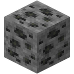
-
2. Break wood blocks by holding down the left mouse button.
-
3. Collect 10-15 logs.
Build a Crafting Table
-
1. Open up your inventory by pressing the key E.
-
2. In the crafting slot, place 1 log to create 4 wood planks.
-
3. In the crafting slot, place 4 wood planks, one in each square, to create a crafting table.
-
4. Put the crafting table in your hotbar, then close your inventory by pressing E.
-
5. Place the crafting table down by pressing right click while holding the crafting table in your hand.
-
6. Right click the crafting table to start making items.
The crafting table will be the main tool in creating new items and tools you will need. Below are some basic recipes that you need:
Note: Any type of log/wood will work for these recipes.
-
Wood Planks: 1x log
-
Sticks: 2x Wood Planks
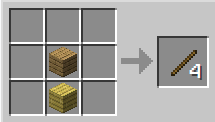
-
Wooden Pickaxe: 3x Wood Planks, 2x Sticks
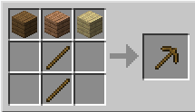
-
Wooden Axe: 3x Wood Planks, 2x Sticks
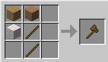
-
Wooden Sword: 2x Wood Planks, 1x Stick
Mining
With your new tools, it is time to venture down into the caves and gather better materials to upgrade. This can be done by finding a natural cave or digging down manually.
Getting Stone Upgrades
-
Find exposed stone, or dig down a few blocks.
-
Using a wooden pickaxe, mine the stone blocks to gather cobblestone.
-
Stone tools have the same recipe pattern as wooden tools, with the wood planks substituted with cobblestone.
At some point, you will find different types of ores while mining. Most ores require a certain tier of tool to mine, explained below:
-
Coal: Any pickaxe
-
Iron Ore: Stone, Iron, or Diamond pickaxe
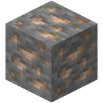
-
Gold Ore: Iron or Diamond pickaxe
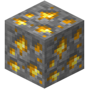
-
Diamond Ore: Iron or Diamond pickaxe
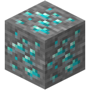
Smelting
You may notice that when trying to make an iron tool with raw iron, it doesn’t work. This is because ores like iron and gold have to be smelted into ingots before they can be used to craft items. To smelt, you need a furnace, coal, and the ore itself.
Note: furnaces can also be used to cook raw food you obtain by killing animals (cow, sheep, pig, chicken)
-
Furnace: 8x cobblestone
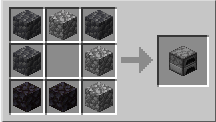
-
Smelting: Ore (or raw food) on top slot, Coal on bottom slot, Smelted ore will soon appear in right slot
Other Useful Recipes
You can find all craftable recipes in the game by clicking on the green book icon to the left of the crafting slots while using the crafting table. Besides the basic recipes given, here are some essential recipes that will help you get through the first few nights:
Torches
-
1x Coal, 1x Stick
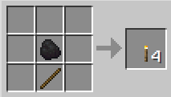
Iron Armor
-
Iron Helmet: 5x Iron Ingots
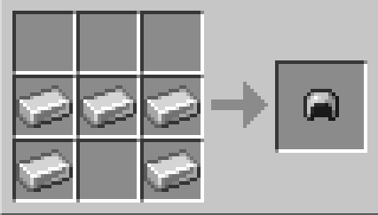
-
Iron Chestplate: 8x Iron Ingots
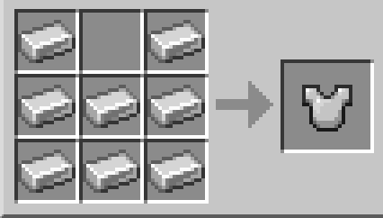
-
Iron Leggings: 7x Iron Ingots
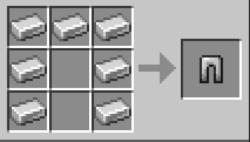
-
Iron Boots: 4x Iron Ingots
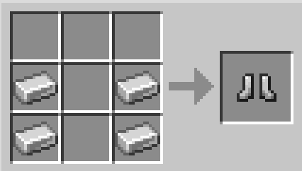
Shield
-
1x Iron Ingot, 6x Wood Planks
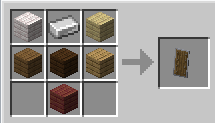